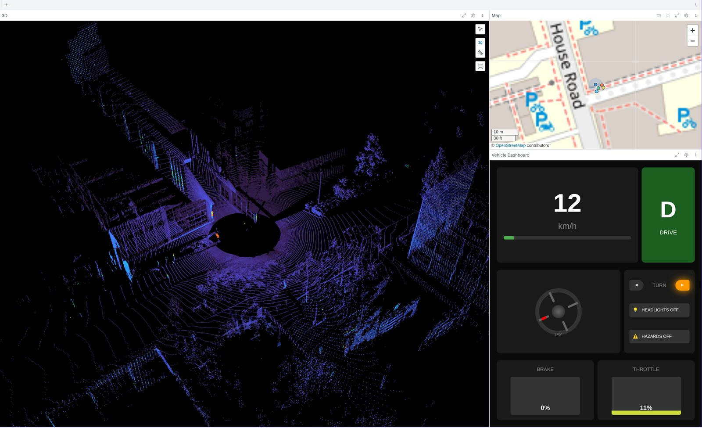

Operator tools for Errol, an autonomous research car
The operator tools I built for Errol, the UQ School of Mechanical and Mining Engineering's autonomous research car, during the 2025 UQ Winter Research Program: 10 custom TypeScript panels in 4 Foxglove layouts, tested against a simulator of 15 sensor and drive-by-wire topics and used to replay the car's recorded drives.
- My role
- Winter research student. I built the Foxglove operator tools and a ROS 2 simulator for the car, and fixed two of its LiDAR faults
- When
- Jun – Jul 2025
- Tools
- TypeScript, Foxglove, ROS 2, Linux (systemd, dnsmasq), Ouster LiDAR
- Code
- Private: held by the lab
The car
Errol is a Lexus RX 450h fitted with Ouster OS1-128 and RoboSense BP32 LiDARs, a NovAtel PwrPak7D and four u-blox ZED-F9P GNSS receivers, and PACMod3 drive-by-wire, all on ROS 2.
What I did
- I built 10 Foxglove panels in TypeScript, arranged in 4 layouts, for the car's LiDAR, GNSS and drive-by-wire data.
- I wrote a ROS 2 simulator of 15 sensor and drive-by-wire topics, so the panels could be tested without the car.
- The Ouster LiDAR driver's buffers were overrunning. I stopped it with a systemd service that switches the CPU out of powersave mode.
- The LiDAR sometimes failed to start. I fixed it by giving the LiDAR a permanent MAC-based DHCP lease through dnsmasq.

Credits
Errol belongs to the UQ School of Mechanical and Mining Engineering. The page covers the tools I built for it during the 2025 UQ Winter Research Program. The replay runs Lichtblick (opens in a new tab) v1.31.0 (Mozilla Public License 2.0; its source and my changes), and its car model is derived from the Lexus in Autoware's sample vehicle (opens in a new tab) (Apache License 2.0). Map tiles © OpenStreetMap (opens in a new tab) contributors.